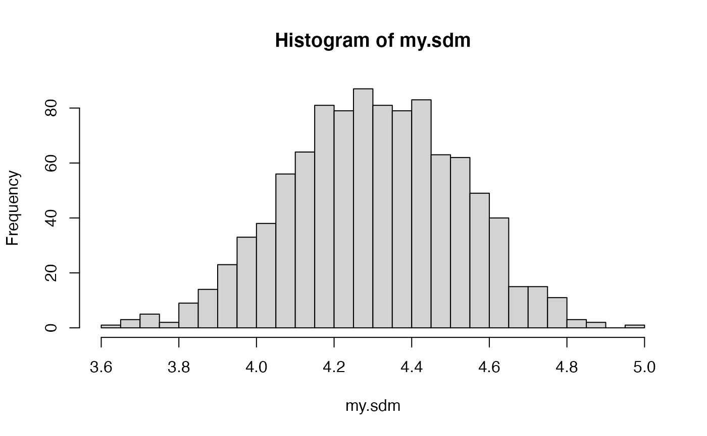
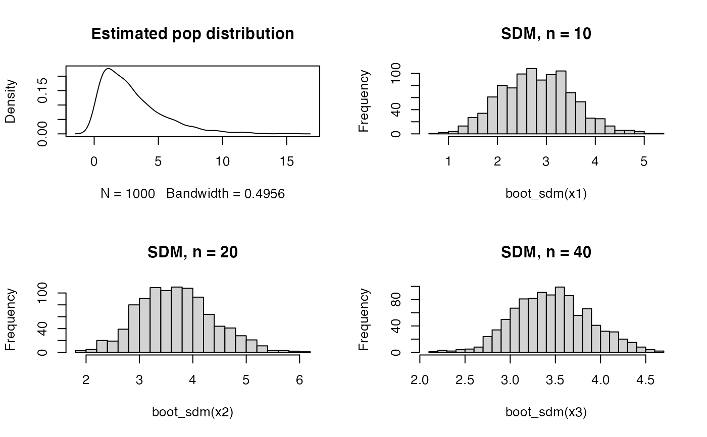

Bootstraps the sampling distribution of the means for a given vector of observations
boot_sdm(x, boot.R = 999, ncpus = 1, seed = NULL)vector of observations
number of bootstrap resamples
number of cores to use
seed for the PRNG
vector of bootstrap estimates of the sample mean
A.C. Davison, D.V. Hinkley: Bootstrap methods and their application. Cambridge University Press (1997)
F. Campelo, F. Takahashi: Sample size estimation for power and accuracy in the experimental comparison of algorithms. Journal of Heuristics 25(2):305-338, 2019.
x <- rnorm(15, mean = 4, sd = 1)
my.sdm <- boot_sdm(x)
hist(my.sdm, breaks = 30)

qqnorm(my.sdm, pch = 20)
x <- runif(12)
my.sdm <- boot_sdm(x)
qqnorm(my.sdm, pch = 20)
# Convergence of the SDM to a Normal distribution as sample size is increased
X <- rchisq(1000, df = 3)
x1 <- rchisq(10, df = 3)
x2 <- rchisq(20, df = 3)
x3 <- rchisq(40, df = 3)
par(mfrow = c(2, 2))
plot(density(X), main = "Estimated pop distribution");
hist(boot_sdm(x1), breaks = 25, main = "SDM, n = 10")
hist(boot_sdm(x2), breaks = 25, main = "SDM, n = 20")
hist(boot_sdm(x3), breaks = 25, main = "SDM, n = 40")

par(mfrow = c(1, 1))